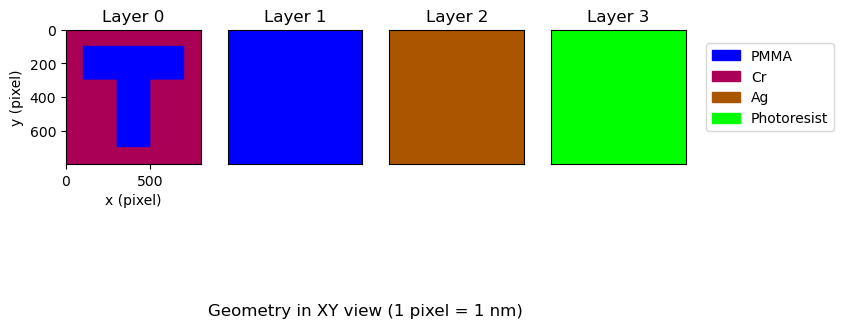
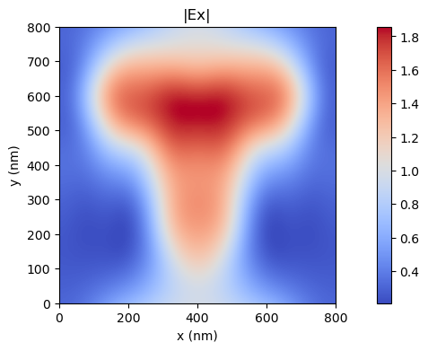
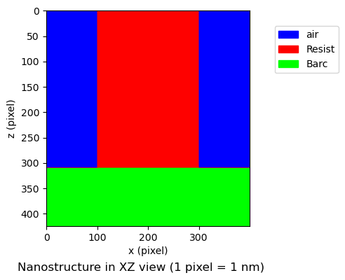
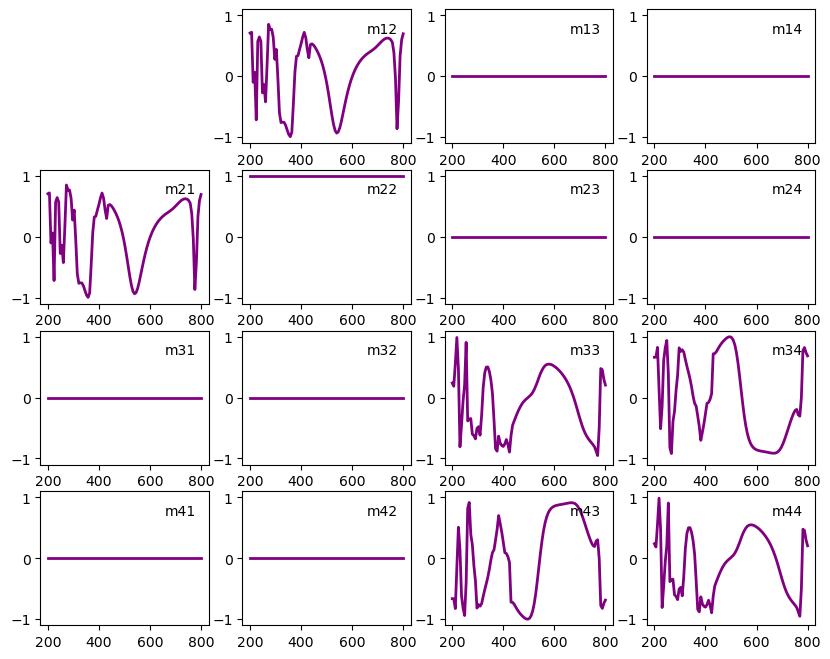

**SolverM**
SolverM: is an efficient GPU-based Solver for Maxwell's equations in
computational electromagnetics.
## **Introduction**
Understanding and controlling the interaction between light and matter
is crucial for physics and engineers. Despite ongoing efforts to develop numerical
techniques and deep learning approaches for forward simulation and inverse scattering problems, efficiently
solving for three-dimensional (3D) complex systems remains challenges.

**SolverM:** is an accurate and fast Solver for Maxwell's equations.
- SolverM enables ultrafast simulations through GPU accelerations without requiring discretization of the additional time dimension or involving eigen problems.
- SolverM is effcient for simulating both subwavelength gratings and large-scale structures, delivering high performance for accurate applications in optical metrology, computational lithography. It also enables efficient simulation of large-scale
metasurfaces and facilitates the design of photonic structures
## **Benchmark**
The following sections provide examples and benchmarks for SolverM. Validation of SolverM is
conducted through published documentations and comparison with electromagnetic software such
as
Meep (open source-FDTD). and
Tidy3D (GPU-FDTD).
However, it's important to note that **comparisons are relative**, as variations in numerical
efficiency can arise from differences in simulation methods, programming languages,
simulation targets, computer resources... Our primary objective is to develop efficient
solutions for complex 3D nanostructures.
In highlighted benchmarks, SolverM showcases impressive performance, being two-order and three-order
magnitude faster in plasmonic sensor and
lithography imaging applications.
SolverM completes the theoretical inverse problem of 2D-gratings
just 1 second. For micro-nanostructure arrays, SolverM requires 2s for simulating
optical reponses.
## **Periodic structures**
### Plasmonic sensor
We demonstrate a plasmonic sensor simulation in
on Schlipf and Inga A. Fischer, Optics express, 2021.
The plasmonic sensor is composed of metallic nanoarrays on bottom homogeneous layers.
In SolverM, a structure is presented through its layer components.
A grating layer is defined by three attributes: mask, base material,
and grating material, while a homogeneous layer is defined by mask and
base material. In the plasmonic sensor, the metallic nanoarray is defined:
```python
layer['mask']=SM.Geometry.Circle(CD=Diameter,Cx=Lx/2,Cy=Ly/2) # nanohole
layer['grating']={'eps': e_water,'name':'water'} # nanohole in water
layer['base']={'eps': e_Al,'name':'Al'}
```
and the homogeneous layer is defined:
```python
layer['mask']=SM.Geometry.Homo()
layer['base']={'eps': e_SiO2,'name':'SiO2'}
```
To verify the geometry before performing simulations, SolverM offers
visualization of the defined geometry in the XY, XZ, and YZ planes.
Nanostructure dimensions are presented in pixel length (user define).
In the XY plane, SolverM provides the option to display either all layers
or specific layers of interest within a structure
```python
SM.Geometry.XY(Geometry,pos_layer=[0,1,2,3])
```

```python
SM.Geometry.XZ_YZ(Geometry)
```

**Simulation time:**
SolverM requires less than 1s for *standard resolution*, and 5s for *fine resolution*
to compute optical responses at 81 wavelength points: Reflectance, Transmittance and Absorbance of
the 3D-plasmonic structure in water. SolverM is two orders of magnitude faster than
RCWA simulation developed by Jon Schlipf and Inga A. Fischer, Optics express, 2021.

### Plasmonic Lithography
In this benchmark, we implement a plasmonic lithography imaging model.
The plasmonic structure utilized is adapted from
Ding et al.,Optic express, 2023.
A customized mask is used to define the T-shaped pattern.
```python
layer_lth['mask_uf']=customized T-mask
layer_lth['grating']={'eps': e_PMMA,'name':'PMMA'}
layer_lth['base']={'eps': e_Cr,'name':'Cr'}
```

**Simulation time:**
SolverM requires less than 1s to compute the electric field of the 3D-plasmonic lithography structure,
making it 1000 times faster than Ansys and 400 times faster than
RCWA simulation developed by Ding et al.,Optic express, 2023.

### Mueller Matrix Ellipsometry-Si gratings
In the example, we reproduce the Mueller matrix obtained from ellipsometry measurement
of 2D Si gratings, adapted from
Martino et al.,SPIE Proc,2008.

Mueller matrix ellipsometry is a non-dectructive, non-Contactct measurement technique to characterize
nanostructures.
By measuring all polarizing states of the sample, Mueller matrix ellipsometry is very
sensitive to optical responses and has been extensively used for optical metrology applications.
The simulation of Mueller matrix ellipsometry is essential for solving inverse
problems to reconstruct nanostructures from the measurement.
**Simulation time:**
SolverM requires about 1s to compute the Mueller matrix of AOI=45, Azimuth
=[0, 15, 30, 45, 60, 75, 90].

### 2D-Photoresist
In the given example, SolverM is used to solve the theoretical inverse problem of spectroscopic
ellipsometry applied to 2D photoresist structures in
Liu et al.,Thin Solid Films,2015.

The optical properties of BARC and photoresist are calculated using Forouhi model and Tauc-Lorentz
model, respectively. The Mueller matrix in the following figure is simulated based on
a structure with a photoresist thickness of 115 nm, a BARC thickness of 310 nm, and a critical
dimension (CD) of 200 nm. It is noted that at azimuth=0, the off-diagonal
Mueller ellements are zero.

For the theorical inverse problem, initial parameters are randomly chosen, and the
Levenberg-Marquardt algorithm is employed for iterative optimizations. The theoretical
inverse problem involving three parameters typically requires approximately 1 second to converge.
However,it is noted that this benchmark does not reflect practical applications
where challenges such as measurement noise, complex geometries arising from fabrication
constraints... must be addressed.
## **Large structures**
### GaN_GradientMetasurface
In the benchmark, we reproduce the diffraction efficiency of μm-scale 3D metasurface arrays in
Elsawy et al.,Scientific Reports ,2019.
SolverM displays the metasurface array in pixels for simulations:

**Simulation time:**
It takes approximately 2s to compute the Transmittance and Diffraction Efficiency for
the first order of the TM polarized wave.

## **Film stack**
## **Issues**
### 3D Visualization
I'm currently developing a 3D interactive visualization tool for nanostructures using Plotly.
While Plotly's Mesh3D is used for representing cubes and Surface for cylinders, I'm encountering
an issue with legends where their shapes differ. In this example, the legend for 'air' and the
legend for 'SiN' are different. The reason is that Plotly automatically differentiates the
legends based on the plot type (Mesh3D and Surface).
Do you have any suggestions on how to customize legend shapes in 3D Plotly

## **Contact**
While SolverM demonstrates impressive performance, it is still in its early stages and requires further development.
Please feel free to reach out for more information:
**Email:** phamhoanglam.fr@gmail.com